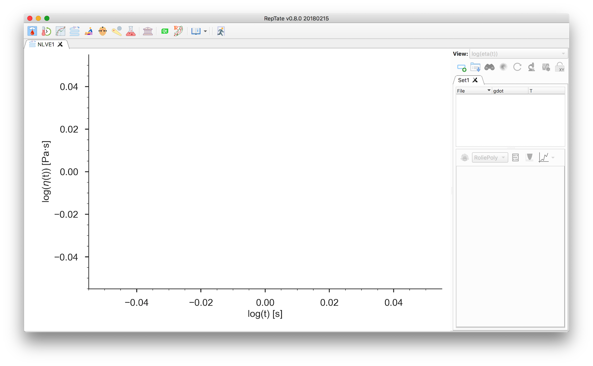
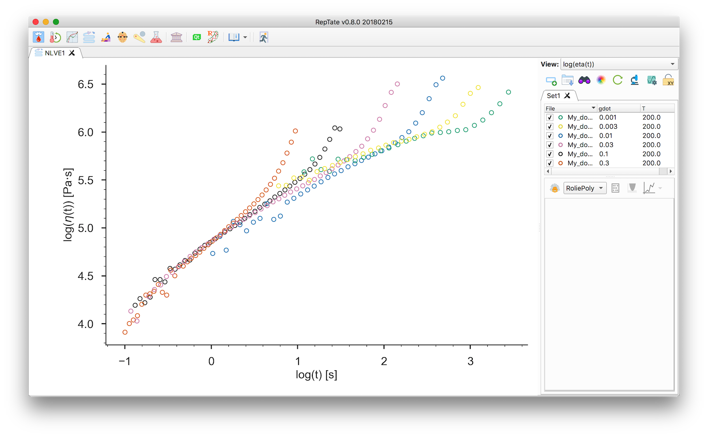
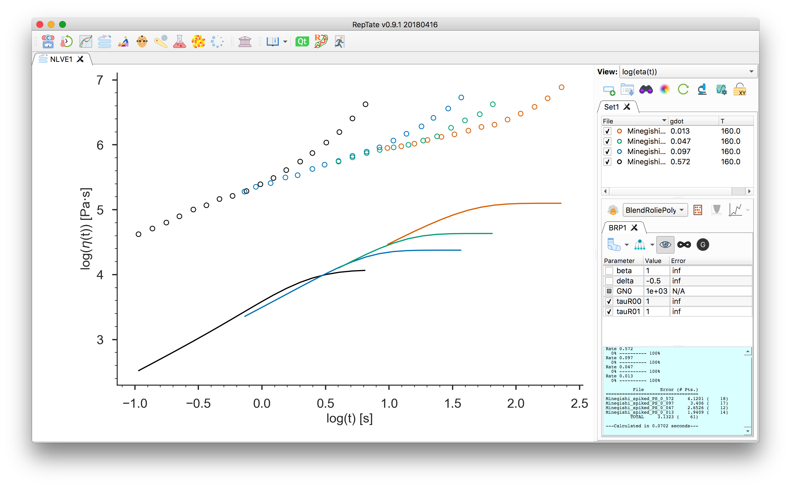
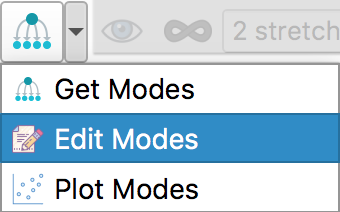
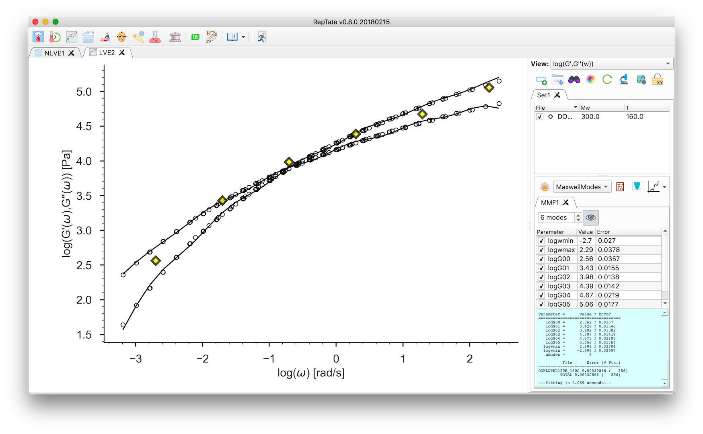
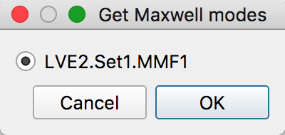
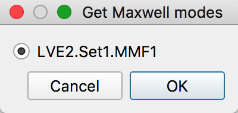
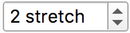

Tutorial Rolie-Poly¶
Non-Linear flow prediction
Start RepTate and create a new NLVE Application
 :
:Drag and drop shear (
.shear) or uniaxial extension (.uext) data files, e.g. all the.uextfiles from the folderdata/DOW/Non-Linear_Rheology/Start-up_extension/.The first column of the file should contain the time and the second column the stress (shear, or tensile, stress growth function).
Select the “RoliePoly” theory
 and press
and press  to create it.
to create it.At this point, you need to setup the relaxation times, \(\tau_i\), and weights, \(g_i\), for each mode \(i\). You can:
Input them manually by clicking:
then select the number of modes, enter the values and click “OK”, then minimize
 .
.Alternatively, it is possible to copy the values from a file or spreadsheet from and external program and paste the values into the “Edit Modes” table. Note that you should adjust the number of modes before pasting the values.
Obtain the Maxwell modes from a different RepTate application (LVE, TTS, G(t)). In this tutorial we will import Maxwell modes from a LVE application.
Create a new LVE Application
 and open the linear viscoelastic data
file corresponding to the same sample at the same temperature.
Then create a new Maxwell theory
and open the linear viscoelastic data
file corresponding to the same sample at the same temperature.
Then create a new Maxwell theory  and minimize :
and minimize :Return to the NLVE application and now click
 and select from which
theory you want to import the modes  and click “OK” and minimize :
and select from which
theory you want to import the modes  and click “OK” and minimize :Click the
 button to show (or hide) the linear viscoelastic envelope
prediction:
button to show (or hide) the linear viscoelastic envelope
prediction:The number of stretching modes is given by . \(N_\text{stretch}=0\) means that the non-stretching version of the Rolie-Poly model will be used for all modes. See Rolie-Poly equation for more details. So far, the calculations were done using “infinitely stretching chains” . Click that button to use finite extensibility . The maximum extensibility parameter
lmaxis now present in the parameter table. You can change its value and click “calculate” to update the theory
predictions:
to update the theory
predictions:
{kind=link}
{kind=link}
{kind=link}
{kind=link}
{kind=link}
{kind=link}
{kind=link}
{kind=link}
{kind=link}
{kind=link}
{kind=link}
{kind=link}